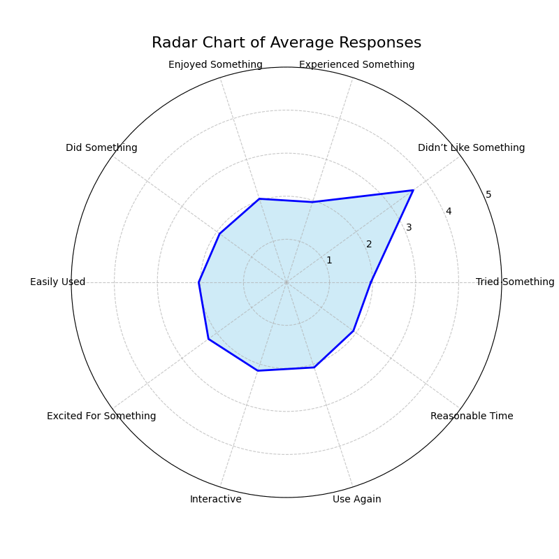
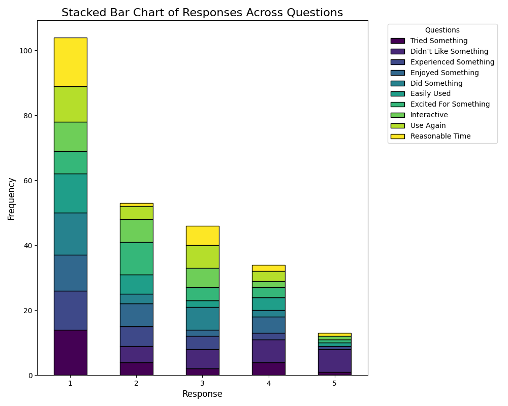
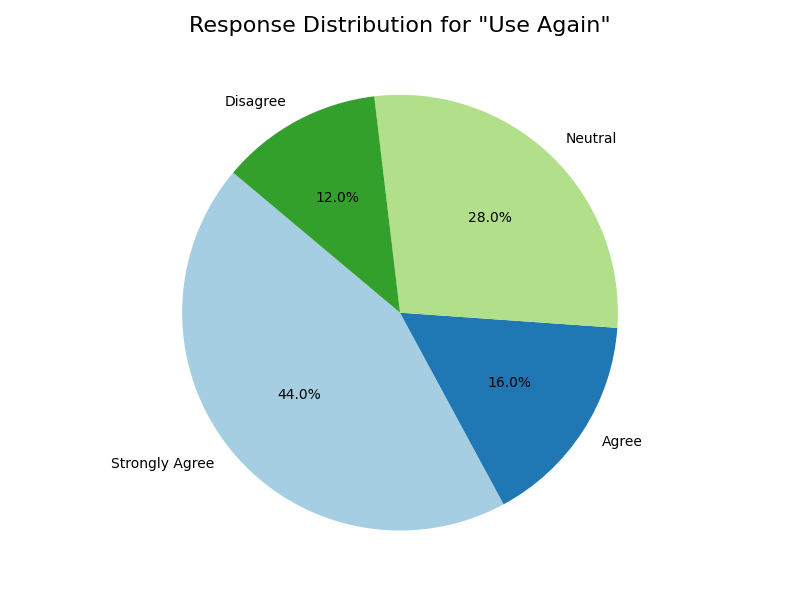

Radar Chart: Average Responses
The radar chart highlights the average ratings across all survey questions, providing insights into overall trends and comparative strengths and weaknesses.
Stacked Bar Chart: Response Distribution
This stacked bar chart shows the distribution of responses across all questions, offering a detailed breakdown of user feedback.
Pie Chart: "Use Again" Responses
The pie chart illustrates the proportion of respondents willing to use the application again, providing a focused view of user sentiment on this critical metric.